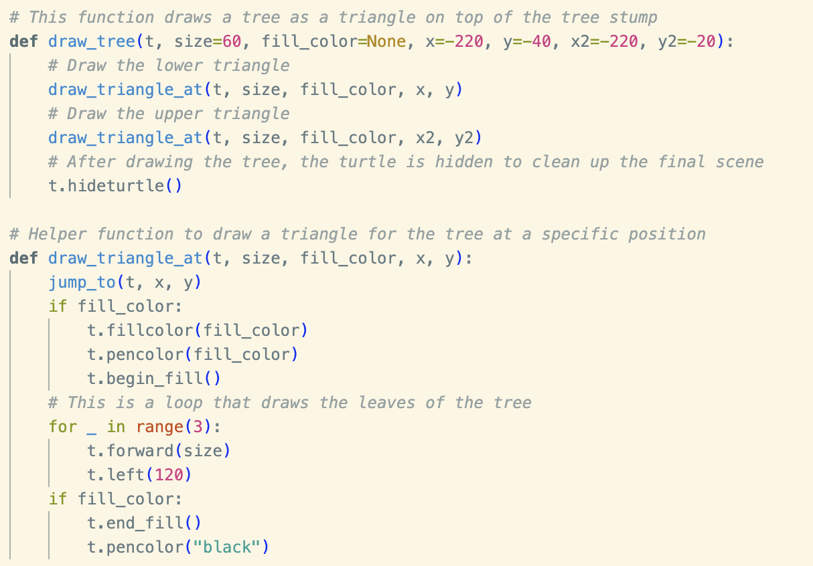
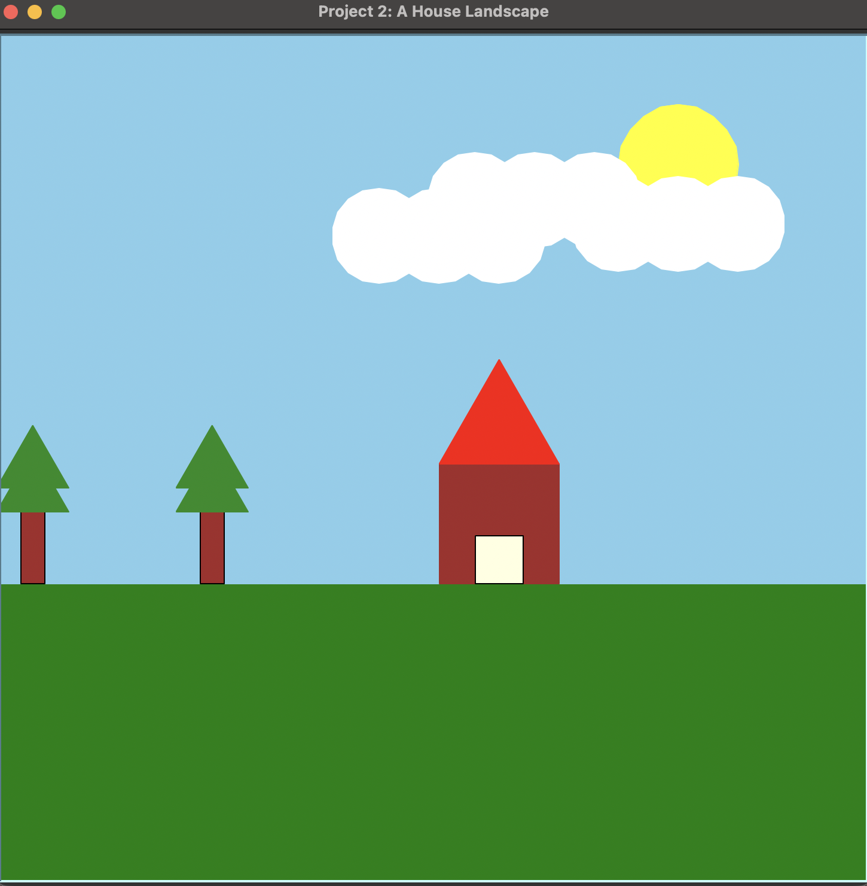

In this project, I used the Turtle graphics library to create a scene. I used the provided building block functions, (draw_rectangle, draw_triangle, draw_square, and draw_cricle) to create functions that draw clouds, a house, and grass, etc. Follwing the block functions, I refactored my code by adding for loops to create multiple clouds, trees, and the grass.
This function creates the leaves of the tree and postions the trees in the scene. It uses a def with parameters to draw each triangle on the tree stump.The for loop is used to position the trees at different locations on the grass. The size and color of the trees can also be customized by changing the parameters when calling the function.
The parameters are as follows:

Here's the completed turtle graphics scene featuring a cloudy day with a bright sun, a blue sky, green grass, two trees, and a red house.
